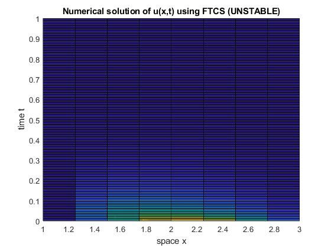
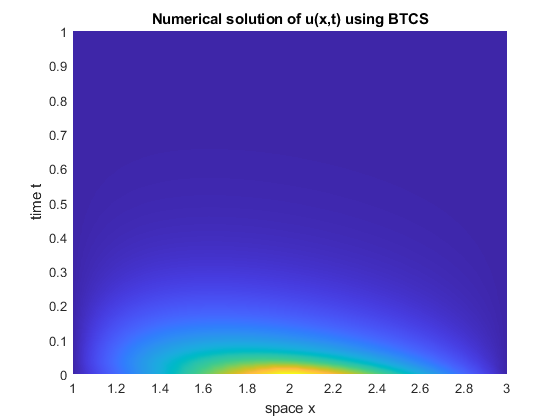
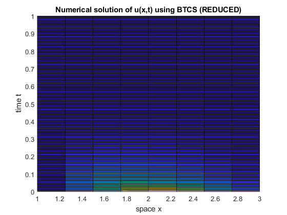
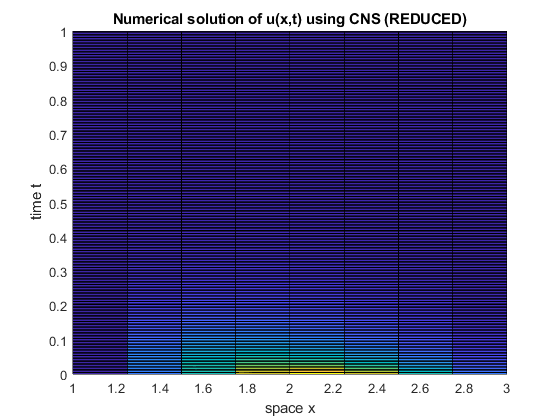

Contents
- Part 1: Analytical Solution
- Auxiliary Functions for the Analytical Solution
- Part 2: Numerical Solution
- Heat Equation (with variable coefficients) (FTCS)
- Heat Equation (with variable coefficients) (BTCS)
- Heat Equation (with variable coefficients) (BTCS)
- Example: Heat Equation (with variable coefficients) (CNS)
- Example: Heat Equation (with variable coefficients) (CNS)
% item5.m [Hebron, Yenzy] ana(); % ftcs(); btcs(); cns_reduced();
Part 1: Analytical Solution
function ana() global e; e = exp(1); N = 20; % Adjust N for no. of summation terms considered x = linspace(1,3,50); % x in [1,3] t = linspace(0,1,50); % t > 0, same size as x usoln = zeros(numel(x),numel(t)); for j = 1:numel(t) for i = 1:numel(x) usoln(i,j) = u(N,x(i),t(j)); end end figure(1); plotter(x,t,usoln'); title("Analytical solution of u(x,t)") view(2); end function ret = u(N,x,t) % Pass onto here values from fine intervals of x and t. % i.e. x and t are not vectors here, neither is c_n global e; ret = 0; for n = 1:N ret = ret + c_n(n,1,3)*e^(-k_n(n)*t-t)*x^(-1/2)*sin(w_n(n)*log(x)); end % return value is a scalar end function ret = c_n(n,a,b) % The xs inside cn_num and cn_den will be vectors wrt CSR 1/3 cn_num = @(x) (1-abs(x-2)).*x.^(-1/2).*sin(w_n(n).*log(x)); cn_den = @(x) (x.^(-1/2).*sin(w_n(n).*log(x))).^2; ret = Newton_Cotes(a,b,cn_num)/Newton_Cotes(a,b,cn_den); % return value is a scalar end function I = Newton_Cotes(a,b,int) % int pertains to the integrand, pass it onto here % as a function using @func syntax N = 100; % Number of Testpoints if (b-a == 0) I=0; return; end h = (b-a)/(N-1); x = (a:h:b)'; % test points at h stepsize % Composite Simpson's 1/3 Rule % Preemptively apply the constant factors of the terms w = h/3*ones(N,1); w(2:2:end-1) = 4*w(2:2:end-1); w(3:2:end-1) = 2*w(3:2:end-1); f = int(x); % solve for y=f(x) values % Combine applied constant factors with the f(x) values. I = dot(w,f); % Return value is a scalar end
Auxiliary Functions for the Analytical Solution
function ret = w_n(n) ret = n*pi/log(3); end function ret = k_n(n) ret = n^2*pi^2/log(3)^2 + 1/4; end
Part 2: Numerical Solution
function U = ftcs()
Heat Equation (with variable coefficients) (FTCS)
x in [x1,xn], t in [t1, tn], D = x^2 %% WARNING: UNSTABLE
x1 = 1; xn = 3; t1 = 0; tn = 1;
% Dirichlet BCs: u(x1,t)=alpha, u(xn,t)=beta;
alpha = 0; beta = 0;
% IC: u(x,0)=f(x)
f = @(x) 1 - abs(x - 2);
% Discretization
% We'll have to abandon plotter for this to work, adjust dx and dt
% independently of each other, U may not be square
dx = 0.25000;
x = (1:dx:3)';
dt = 0.0045;
t = (0:dt:1)';
U = zeros(numel(x),numel(t)); % initialize U, the zeros are placeholders only
U(1,:) = alpha;
U(end,:) = beta;
U(2:end-1,1) = f(x(2:end-1)); % set init guess here, use IC f(x)
for j = 1:numel(t)-1
for i = 2:numel(x)-1
U(i,j+1) = (x(i)^2*dt/dx^2 - x(i)*dt/dx)*U(i-1,j) + ...
(1 - 2*x(i)^2*dt/dx^2 - dt)*U(i,j) + ...
(x(i)^2*dt/dx^2 + x(i)*dt/dx)*U(i+1,j);
end
end
U; % approximate temp gradient
figure(2);
surf(x,t,U');
title("Numerical solution of u(x,t) using FTCS (UNSTABLE)")
xlabel('space x'); ylabel('time t'); zlabel('heat u(x,t)')
view(2)
% NOTE: TO combine this with btcs, merge btcs backwards to ftcs
% i.e. filter data from btcs to fit ftcs.
 end function U = btcs()
Heat Equation (with variable coefficients) (BTCS)
x in [x1,xn], t in [t1, tn], D = x^2
x1 = 1; xn = 3; t1 = 0; tn = 1;
% Dirichlet BCs: u(x1,t)=alpha, u(xn,t)=beta;
alpha = 0; beta = 0;
% IC: u(x,0)=f(x)
% Discretization
n = 30; % number of points in space and time, total of n*n points
% Note: Prog only works when nx = nt, issue with plotter when nx != nt
dx = (xn-x1)/(n-1); % stepsize in space
x = x1 + (0:dx:(n-1)*dx); % steps in space
dt = (tn-t1)/(n-1); % stepsize in time, no restrictions
t = t1 + (0:dt:(n-1)*dt); % steps in time
% Construct Au = b % Where b = [alpha, ..., dx^2*u_prev(i), ..., beta]
A = zeros(n,n); % Becomes almost a constant tridiagonal matrix
% Can use LU fact because A is constant
% Zeros are (useful) placeholders
% Boundary Nodes
A(1,1) = 1;
A(n,n) = 1;
% Internal Nodes (Manual Construction)
for i = 2:n-1
A(i,i-1) = x(i)*dt*dx-x(i)^2*dt; % coeff of u_(i-1)^j (left)
A(i,i) = dx^2+2*x(i)^2*dt+dt*dx^2; % coeff of u_i^j (center)
A(i,i+1) = -x(i)*dt*dx-x(i)^2*dt; % coeff of u_(i+1)^j (right)
end
% Construct solution matrix V
% Will dynamically contain:
% Knowns u_i^(j-1) or u_prev and
% Unknowns u_i^j or u (should both be 2D)
% Initial guess on u_i^1 (use this instead of given IC)
% Note: Use V as container of both u and u_prev
% (use V instead of U to avoid confusion with LU fact)
V = ones(n,n);
% V = dx^2*V; %% mult dx^2 once column is next to be used (!!)
% bcos if we do this here, u_prev will contain
% updated values already
V(1,1:end) = alpha;
V(n,1:end) = beta;
for i = 2:n-1
V(i,1) = 1-abs(x(i)-2); % set init guess here, USE IC
end
LU = lufact(A,n); % Workable since A is square
% No updating, merely iterating through what we already know.
% Don't confuse this too much with linear FDA.
% Solve u^j using u^(j-1) (fun to watch contents of V)
for j = 2:n
%u = A\b; % for verifying result of LU fact: okay
% Solve LUu = u_prev, let Uu = y.
% Forward sub Ly = u_prev. Solve for y.
% Take u_prev from V, then modify to reflect b
% i.e. mult internal nodes by dx^2
u_prev = V(:,j-1);
u_prev(2:end-1,1) = dx^2*u_prev(2:end-1,1); %% (!!)
b = u_prev; % rename for consistency
y = b; % y(1) is correct
for i=2:n
y(i)=y(i)-LU(i,1:i-1)*y(1:i-1);
end
% Backward sub Uu = y. Solve for u.
u = y;
u(n) = u(n); % u(1) is correct (boundary)
for i=n-1:-1:1
u(i) = (u(i) - LU(i,i+1:end)*u(i+1:end))/LU(i,i);
end
V(:,j) = u; % insert solution to u^j
end
U = V; % approximate temp gradient
% Use U' for plotter to rectify x and t axes
figure(3);
plotter(x,t,U');
title("Numerical solution of u(x,t) using BTCS")
 end function U = btcs_reduced()
Heat Equation (with variable coefficients) (BTCS)
x in [x1,xn], t in [t1, tn], D = x^2
x1 = 1; xn = 3; t1 = 0; tn = 1;
% Dirichlet BCs: u(x1,t)=alpha, u(xn,t)=beta;
alpha = 0; beta = 0;
% IC: u(x,0)=f(x)
% Diff of this with regular BTCS is that we make this match
% the dimensions of the FTCS
dx = 0.25000;
x = (1:dx:3)';
dt = 0.0045;
t = (0:dt:1)';
% Construct Au = b % Where b = [alpha, ..., dx^2*u_prev(i), ..., beta]
p = numel(x); q = numel(t);
A = zeros(p,q);
% Boundary Nodes
A(1,1) = 1;
A(p,q) = 1;
% Internal Nodes (Manual Construction)
for i = 2:p-1
A(i,i-1) = x(i)*dt*dx-x(i)^2*dt; % coeff of u_(i-1)^j (left)
A(i,i) = dx^2+2*x(i)^2*dt+dt*dx^2; % coeff of u_i^j (center)
A(i,i+1) = -x(i)*dt*dx-x(i)^2*dt; % coeff of u_(i+1)^j (right)
end
% Construct solution matrix V
% Will dynamically contain:
% Knowns u_i^(j-1) or u_prev and
% Unknowns u_i^j or u (should both be 2D)
% Initial guess on u_i^1 (use this instead of given IC)
% Note: Use V as container of both u and u_prev
% (use V instead of U to avoid confusion with LU fact)
V = ones(p,q);
% V = dx^2*V; %% mult dx^2 once column is next to be used (!!)
% bcos if we do this here, u_prev will contain
% updated values already
V(1,1:end) = alpha;
V(p,1:end) = beta;
for i = 2:p-1
V(i,1) = 1-abs(x(i)-2); % set init guess here, USE IC
end
% LU = lufact(A,n); % Workable since A is square
% No updating, merely iterating through what we already know.
% Don't confuse this too much with linear FDA.
% Solve u^j using u^(j-1) (fun to watch contents of V)
for j = 2:q
% Because U is now not square, rendering my LU Fact
% implementation useless, we have taken the liberty
% of using the built in matrix solver
u_prev = V(:,j-1);
u_prev(2:end-1,1) = dx^2*u_prev(2:end-1,1); %% (!!)
b = u_prev; % rename for consistency
u = A\b;
V(:,j) = u(1:9); % insert solution to u^j
end
U = V; % approximate temp gradient
% Use U' for plotter to rectify x and t axes
figure(4);
surf(x,t,U');
title("Numerical solution of u(x,t) using BTCS (REDUCED)")
xlabel('space x'); ylabel('time t'); zlabel('heat u(x,t)')
view(2);
 end function U = cns()
Example: Heat Equation (with variable coefficients) (CNS)
x1 = 0; xn = 10; t1 = 0; tn = 1; D = 2;
% Dirichlet BCs: u(x1,t)=alpha, u(xn,t)=beta;
% Discretization
n = 30; % number of points in space and time, total of n*n points
% Note: Prog only works when nx = nt, issue with plotter when nx != nt
dx = (xn-x1)/(n-1); % stepsize in space
x = x1 + (0:dx:(n-1)*dx); % steps in space
dt = (tn-t1)/(n-1); % stepsize in time, no restrictions
t = t1 + (0:dt:(n-1)*dt); % steps in time
% U1: from FTCS, U2: from BTCS
U1 = ftcs();
U2 = btcs();
U = (U1 + U2) ./ 2; % take the average
U;
figure(5);
plotter(x,t,U');
title("Numerical solution of u(x,t) using CNS")
end function U = cns_reduced()
Example: Heat Equation (with variable coefficients) (CNS)
x1 = 0; xn = 10; t1 = 0; tn = 1; D = 2;
% Dirichlet BCs: u(x1,t)=alpha, u(xn,t)=beta;
% Discretization
n = 30; % number of points in space and time, total of n*n points
% Note: Prog only works when nx = nt, issue with plotter when nx != nt
dx = 0.25000;
x = (1:dx:3)';
dt = 0.0045;
t = (0:dt:1)';
% U1: from FTCS, U2: from BTCS_REDUCED
U1 = ftcs();
U2 = btcs_reduced();
U = (U1 + U2) ./ 2; % take the average
U;
figure(5);
surf(x,t,U');
title("Numerical solution of u(x,t) using CNS (REDUCED)")
xlabel('space x'); ylabel('time t'); zlabel('heat u(x,t)')
view(2);
 end function [LU] = lufact(A,n) LU = A; % Iterate through columns, pivoting at diag entries for j=1:n % Check for failure point. if LU(j,j)==0 disp('Zero pivot encountered'); return; end for i=j+1:n % Check for numerically zero entries below LU(j,j) if abs(LU(i,j)) < 1E-10 LU(i,j) = 0; continue; end % Get scalar used to annihilate LU(i,j), % store scalar in corresponding LU entry LU(i,j) = LU(i,j)/LU(j,j); % ERO3 to annihilate L(i,j), row subtraction assumed LU(i,j+1:end) = LU(i,j+1:end) - LU(i,j)*LU(j,j+1:end); end end end function plotter(x,y,z) % Prep for plotting (Borrowed online) % https://www.mathworks.com/matlabcentral/answers/387362-how-do-i- % create-a-3-dimensional-surface-from-x-y-z-points % figure(fig*2+1) % stem3(x, y, z) grid on xv = linspace(min(x), max(x), 100); yv = linspace(min(y), max(y), 100); [X,Y] = meshgrid(xv, yv); Z = griddata(x,y,z,X,Y); % figure(fig*2+2) surf(X, Y, Z); grid on xlabel('space x'); ylabel('time t'); zlabel('heat u(x,t)') set(gca, 'ZLim',[0 100]) shading interp view(2) end